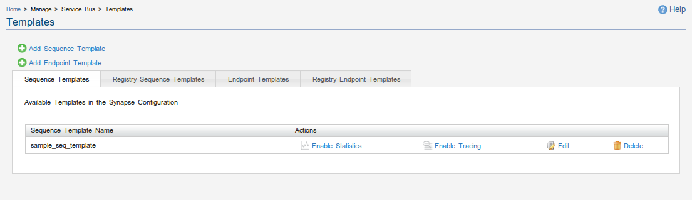
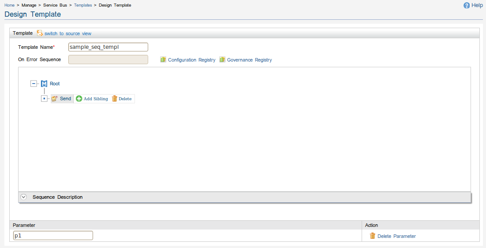
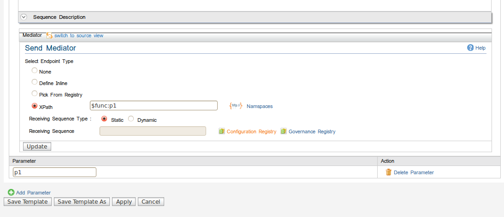
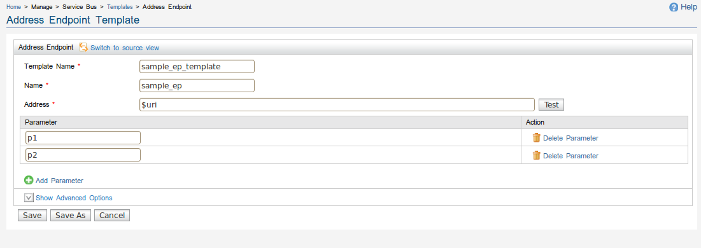
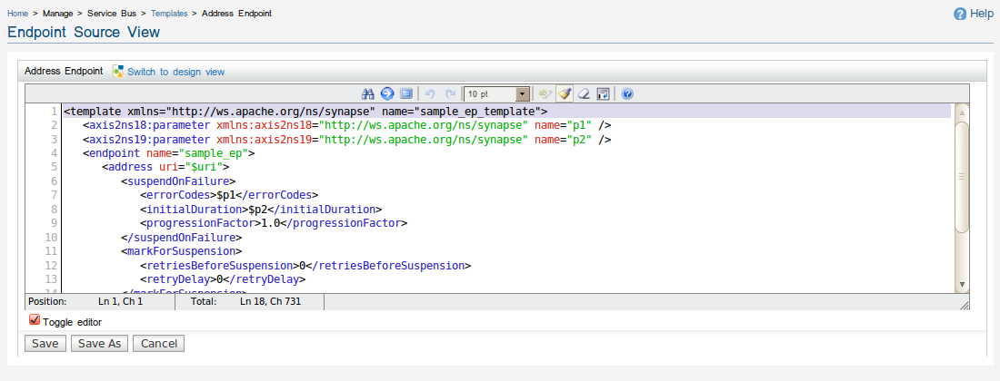

Templates
Use the Templates page to add/edit new template types.
Templates can either be in sequence Templates or endpoint Templates.
As shown in Figure 1 and 2 , the template management section displays a list of
existing templates. (Defined) templates tab shows templates saved in synapse configuration. Registry templates
tab shows templates saved in registry.

Figure 1: Sequence Template management

Figure 2: Endpoint Template management
In the navigator, under Manage/Service Bus, click Templates. The Templates
page appears.
Managing Sequence Templates
- Enable Statistics
- Click Enable Statistics to
gather information relating to a particular sequence template.
- Enable Tracing
- Click Enable Tracing to
turn on all trace messages for the corresponding sequence template
The above options are turned off by default because they cause a severe
performance degradation. Use these options only in a situation where you have
to debug a particular problem. Dynamic sequences does not support Enable Statistics and Enable Tracing.
- Edit
- Click Edit to open the
sequence template in the design view for editing purposes.
- Delete
- Click Delete to remove a
particular sequence template from the system.
Adding a Sequence Template
- On the Templates
page, click Add Sequence Template. The
Design
Template page appears.
- Enter a sequence template name.
- Click Add Child, and select the required nodes for your sequence template.

Figure 3: Add sequence template design view
Adding parameters to a sequence template
- In case, you want to add parameters to sequence templates, click on Add Parameter button.
Then a page appear with a parameter table. You can add and delete parameter name/s.These
parameter names can be accessed within different child nodes using xpath. example shows how to use
this in send mediator with xpath

Figure 3.2: Adding/Accessing sequence template parameters
Click switch to source view to
view the XML of the particular sequence tempalte. If you're familiar with the Synapse
configuration language you can edit the XML directly and save the config using this view.

Figure 4: Source view of the sequence template
Managing Endpoint Templates
- Edit
- Click Edit to open the
endpoint template in the design view for editing purposes.
- Delete
- Click Delete to remove a
particular endpoint template from the system.
Note statistics/tracing options are not available for endpoints templates .
Adding a Endpoint Template
- On the Templates
page, click Add Endpoint Template. The
Add Endpoint Templates
page appears.
- Select an endpoint template type. currently three types are supported -->,

Figure 5.1: Add endpoint template view

Figure 5.2: Add endpoint template design view (for address type)
- Template Name: The unique name for the endpoint template
- Name: a name for the inline endpoint
- Address: The URL of the template endpoint. This can be a parameterized value such as $uri.
If this is a real endpoint you can test the availability of the given URL on the fly by just
clicking the Test Address.
Adding parameters to a endpoint template
- you can add parameters to endpoint templates, click on Add Parameter button
, a page will appear with a parameter table. You can add and delete parameter name/s.These
parameter names can be accessed within different attributes of the endpoint template you are currently
editing. Parameters are accessed with $prefix. For endpoint tempaltes there are two inbuilt paramters
'name' and 'uri' which can be accessed with $name and $uri. Example shows how to access parameters 'uri' ,
'p1' and 'p2' for tempalate attributes 'address' , 'suspend error codes' and 'suspend duration'
respectively

Figure 6.1: Adding/Accessing sequence template parameters
Click switch to source view to
view the XML of the particular endpoint template. As pointed out earlier ,If you're familiar with the Synapse
configuration language you can edit the XML directly and save the config using this view.

Figure 6.2: Source view of the endpoint template
For more information please refer to the WSO2 library